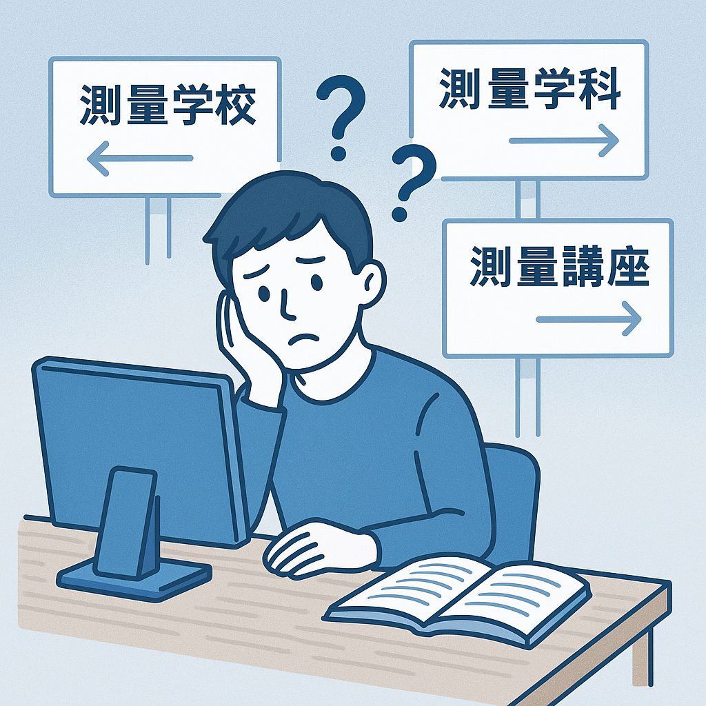
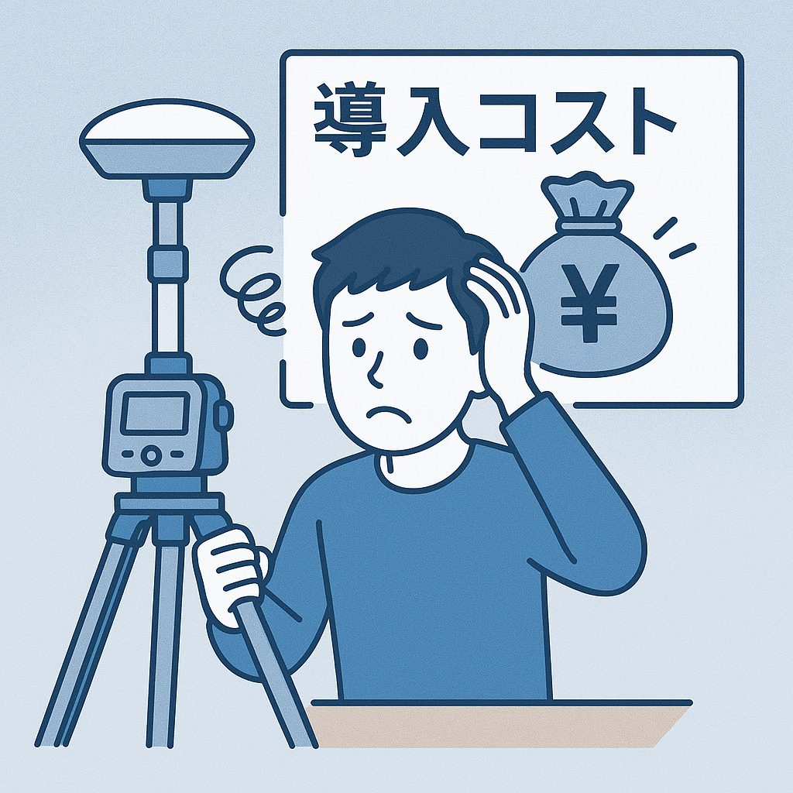

土地家屋調査士による研究・研修の団体です
不動産調査測量の
DX を推進する
ドローン・レーザースキャナ・GNSS などの新しい技術を、現場で使えるところまで。全国の土地家屋調査士が集まり、研究し、研修で伝えています。
研修の予定を見る次回の研修
次回の研修は準備中です。
これまでの研修
- DrogRTK360 操作セミナー（兵庫・宝塚、20名）。主催：土地家屋調査士法人藤井十章事務所。研究所が協賛。
- Drogger GNSS 1DAY 実践研修会（福岡・博多）。RTK-GNSS の補正情報配信（VRS と RRS の違い）、GNSS と SLAM による三次元データを用いた筆界検討、現地でのフィールドワーク。
- Drogger RWG 勉強会（東京・両国、12名）。軽量 GNSS 受信機の設定を、使い慣れたメンバーと一緒に少人数で学ぶ形で3時間。
設立に至った3つの理由
01
最新技術の変化が激しい
最新の器械を導入しようとした時、導入費用を払いきるまでに次世代の器械が登場するなど、変化が目まぐるしく、リスクを伴います。

02習得する場所がみつからない
導入後の器械のオペレーションは、メーカーより指導はあるものの、その後、自身で使用している方法が正しいか否かを確かめる方法や、相談相手がいません。

03導入コストを抑えたい
いずれも高額な器械であり、補助金で導入したとしても、あらゆる器械が登場して、複数導入するには資金が伴いません。
技術ノート
- 最初の記事を準備中です。機材・計測・AI の活用など、現場で使えるメモを載せていきます。